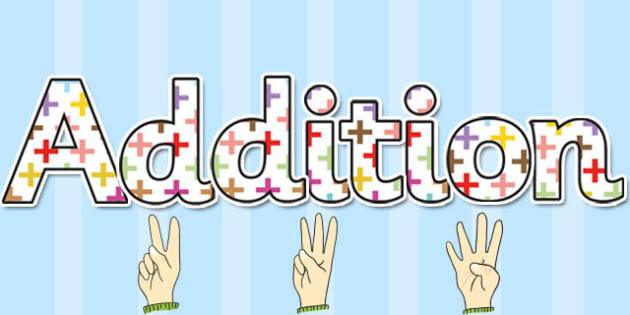
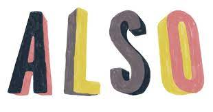
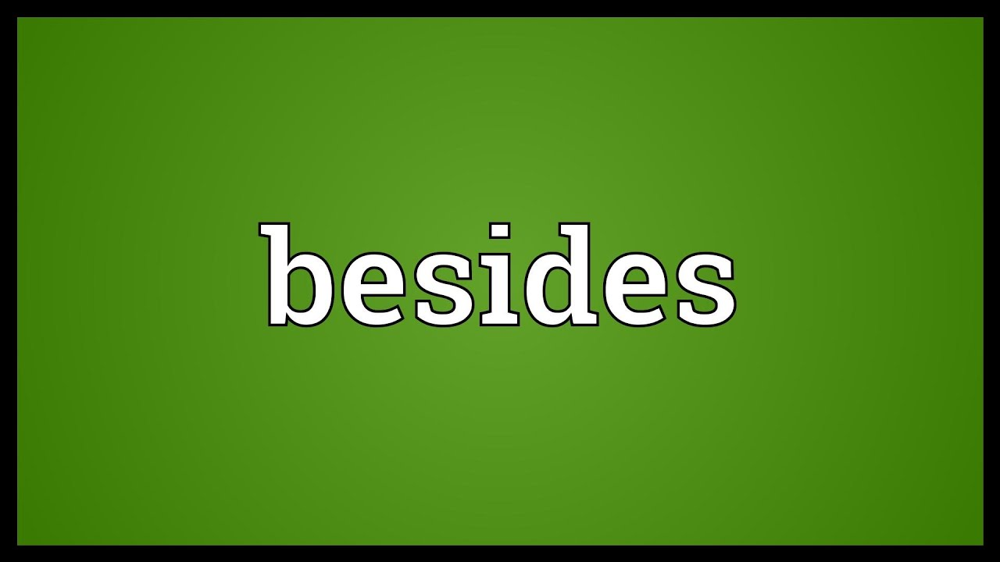
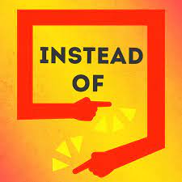
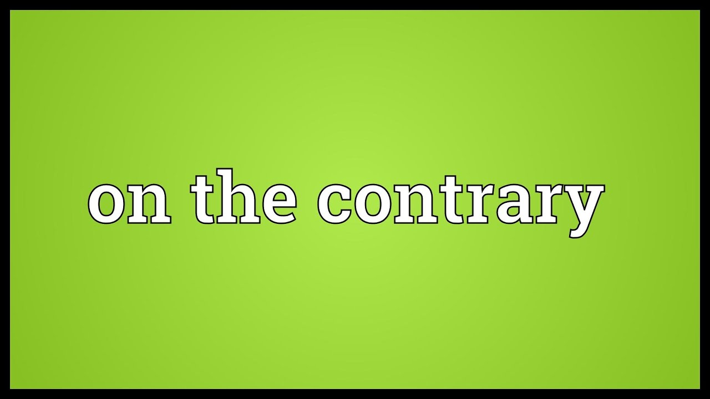

YOU USE IN ADDITION WHEN WE WANT TO MENTION ANOTHER ÍTEM CONNECTED WITH THE SUBJECT YOU ARE DISCUSSING. EXAMPLES:
MY BROTHER SPEAK ENGLISH IN ANDDITION OF SPANISH

ALSO:YOU CAN USE ALSO TO GIVE MORE INFORMATION ABOUT A PERSON OR THING, OR TO ANOTHER REVELANT FACT EXAMPLES:
MY DAS HAS A GOOD REPUTATION UN YOUR WORK, ALSO HE IS BRILLANCE IN THE HOUSE

BESIDES:IS USED TO EMPHASIZE AN ADDITIONAL POINT THAT YOU ARE MAKING, ESPECIALLY ONE THAT YOU CONSIDER TO BE IMPORTANT EXAMPLES:
THE HOUSE WAS TOO EPENSIVE AND TOO BIG. BESIDES, IT WAS FAR FROM OUR JOBS

CONNECTORS OF CONTRAST
HOWEVER:YOU USE HOWEVER WHEN YOU ARE ADDING A COMMENT WHICH IS SUPRISE SONG OR WHICH CONTRASTS WITH WHAT HAS JUST BEEN SIDES EXAMPLES:
THIS WAS NOT AN EASY DECISION, IT IS, HOWEVER IS, A DESICION THAT WE FELL IS DICTATED BY OUR DUTY
INSTEAD:IF YOU DONT DO SOMETHING, BUT DO SOMETHING ELSE INSTEAD, YOU DO THE SECOND THING AND OTHER FIRST THING, AS THE RESULT OF A CHOISE OR A CHANGE OF BEHAVIOUR EXAMPLE:
I DECIDED TO FORGET ABOUT DIETING ALL THE TIME AND EAT NORMALLY INSTEAD

ON THE CONTRARYYOU CAN USE ON THE CONTRARY WHEN YOU ARE DISAGREE STRONGLY WITH SOMETHING THAT HAS JUST BEEN SAID OR IMPLEID, OR ARE MAKING A STRONG NEGATIVE REPLY. EXAMPLES:
PEOPLE JUST DONT DO THINGS LIKE THAT.- ONE THE CONTRARY, THEY DO THEM ALL THE TIME.
